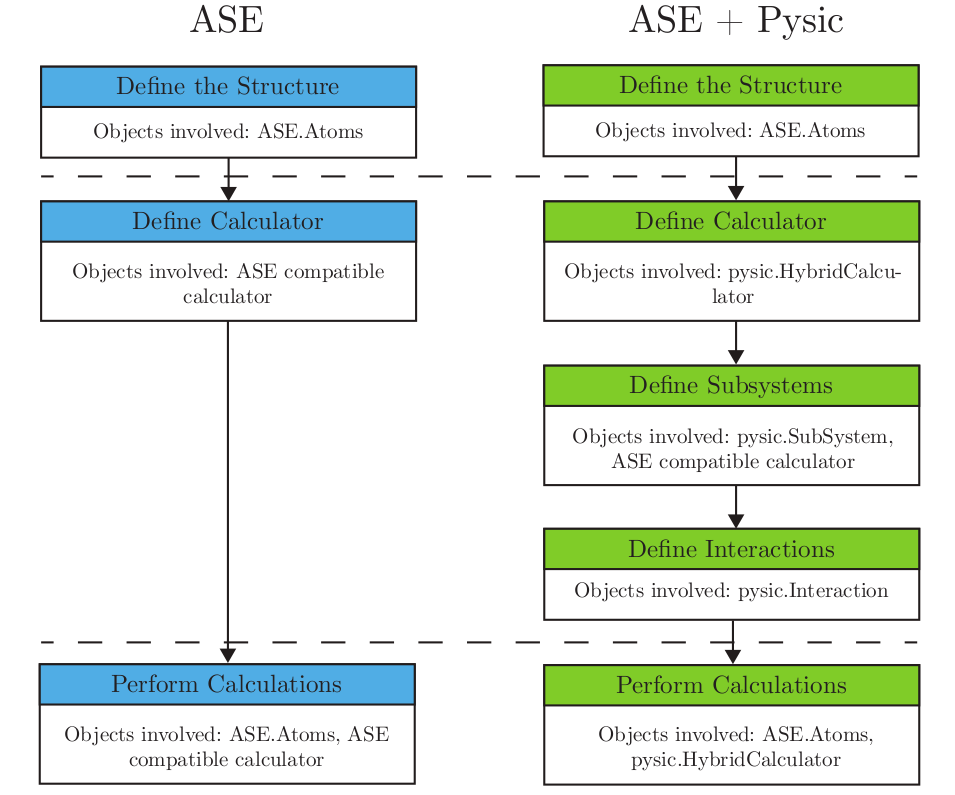

The HybridCalculator provides a regular ASE calculator interface, but internally combines results from multiple different calculators and interactions between them. Currently you can use it for potential energy and force calculations (stress calculations not yet implemented). Like with any ASE calculator, you can also run molecular dynamics and local geometry optimizations with it, but global energy optimization schemes that require a stress implementation will naturally not work due to missing stress implementation.
The following figure demonstrates the simplified workflow comparison of a regular ASE calculation vs. Pysic’s hybrid QM/MM calculation.
HybridCalculator is meant to be used in conjunction with the classes SubSystem and Interaction. See also the run example.
The electrostatic interaction between subsystems is treated with the mechanical embedding scheme. The Coulomb interaction is thus calculated in the MM level by assigning point charges for the atoms in the primary and secondary system. The charges in the secondary system are static and can be obtained from experimental data or theoretical calculations. Rather than also parametrizing the charges in the primary system, in Pysic they can be dynamically calculated by using the electron density provided by the DFT calculator. The positive charge of the nuclei can be accurately modeled as an atom-centered point charge. The effect of the negative electron charge density is approximated also as a single atom-centered point charge. The value of this point charge is calculated by integrating the electron charge density inside a certain volume. Primarily Pysic uses the Bader partitioning scheme to determine these volumes, but a spherical partitioning scheme is also available.
The covalent bonds between subsystems are treated with the link atom approach, i.e. hydrogen atoms are used to cap the bonds in the primary QM system. The hydrogen link atoms are placed on the line connecting the two atoms that form the bond. The exact position of the link atoms in this line can be controlled with the CHL parameter, given when defining the links in add_hydrogen_links(). The link atoms automatically keep their correct position when running dynamics or geometry optimization.
The following methods form the basis for creating and performing hybrid simulations with HybridCalculator:
Used to create and perform hybrid calculations.
This class is a fully compatible ASE calculator that provides the possibility of dividing the Atoms object into subsystems with different ASE calculators attached to them.
You can also define hydrogen link atoms in the interfaces of these subsystems or define any Pysic Potentials through which the subsystems interact with each other.
Used to add a interaction between two subsystems.
Used to define subsystems
You can define a subsystem with a oneliner, or then call setters on the SubSystemInfo object returned by this function.
Calculates the forces in the current structure.
This force includes the forces internal to the subsystems and the forces that bind the subsystems together.
Returns the calculated interaction charges for the given subsystem.
Before the charges can be calulated, one energy calculation has to be made so that the electron density is available
Check if a calculation is required for any of the the given properties.
Check if the quantities in the quantities list have already been calculated for the atomic configuration atoms. The quantities can be one or more of: ‘energy’, ‘forces’, ‘stress’. This method is used to check if a quantity is available without further calculations. For this reason, calculators should react to unknown/unsupported quantities by returning True, indicating that the quantity is not available.
Two sets of atoms are considered identical if they have the same positions, atomic numbers, unit cell and periodic boundary conditions.
Check that the atomic indices of the subsystem are present.
Check that the subsystem doesn’t overlap with another one.
Returns a color set for AtomEyeViewer with different colours for the different subsystems.
When the subsystems have been defined with add_subsystem() and the atoms have been set, this function will return a list of colors for each atom. The different subsystems have different colours for easy identification. You can provide this list of colors to an AtomEyeViewer object for visualization.
Returns the forces acting on the atoms.
If the atoms parameter is given, it will be used for updating the structure assigned to the calculator prior to calculating the forces. Otherwise the structure already associated with the calculator is used.
The calculator checks if the forces have been calculated already via calculation_required(). If the structure has changed, the forces are calculated using calculate_forces()
Returns the potential energy of the hybrid system.
This function has not been implemented.
Returns a copy of the ASE Atoms object for a certain subsystem.
The returned subsystem can be used for e.g. visualization or debugging.
Return the indices of the atoms in the subsystem in the full system.
You can ask the indices even if the subsystems have not been initialized, but the indices of different subsystems may overlap in this case. If the subsystems have been initialized this function will only return indices if they are valid.
Returns the electron pseudo density for the given subsystem.
Return a list of indices for the atoms not already in a subsystem.
Compares the given atoms to the stored atoms object. The Atoms are identical if the positions, atomic numbers, periodic boundary conditions and cell are the same.
Initializes a InteractionInternal from the given Interaction.
Initializes a SubsystemInternal from the given Subsystem.
Initializes the subsystems and interactions.
Called once during the lifetime of the calculator. Typically when calling set_atoms for the first time, or when calculating any quantity for the first time. If the atoms in the simulation need to be updated, update_system() is used.
Print a detailed summary of the different energies in the system. This includes the energies in the subsystems, interaction energies and possible energy corrections.
Print a summary of the atomic charges that are used in the electrostatic interaction between subsystems.
{kind=link}